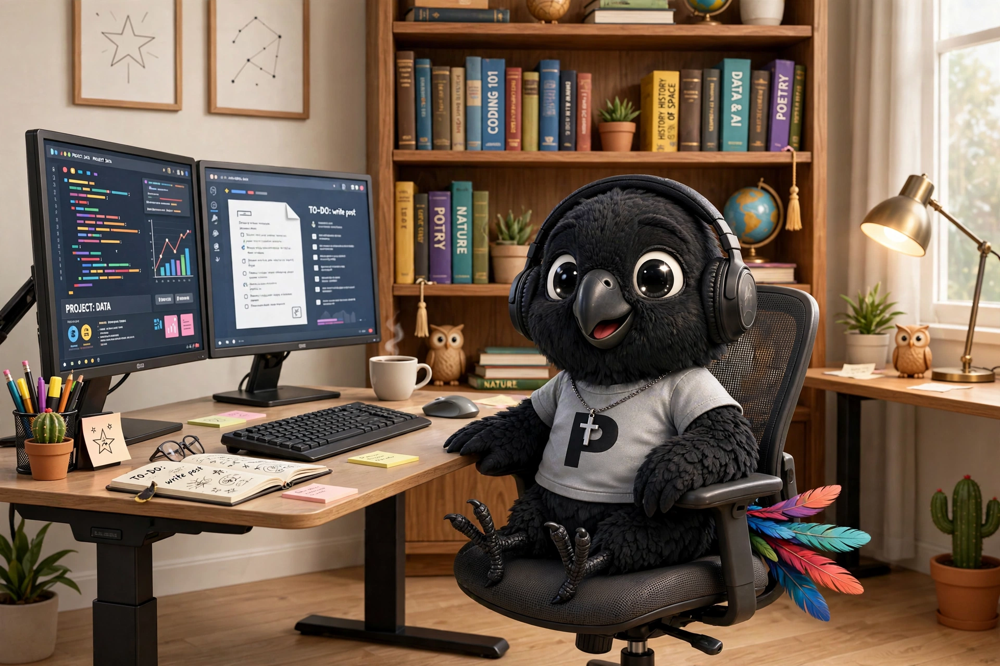
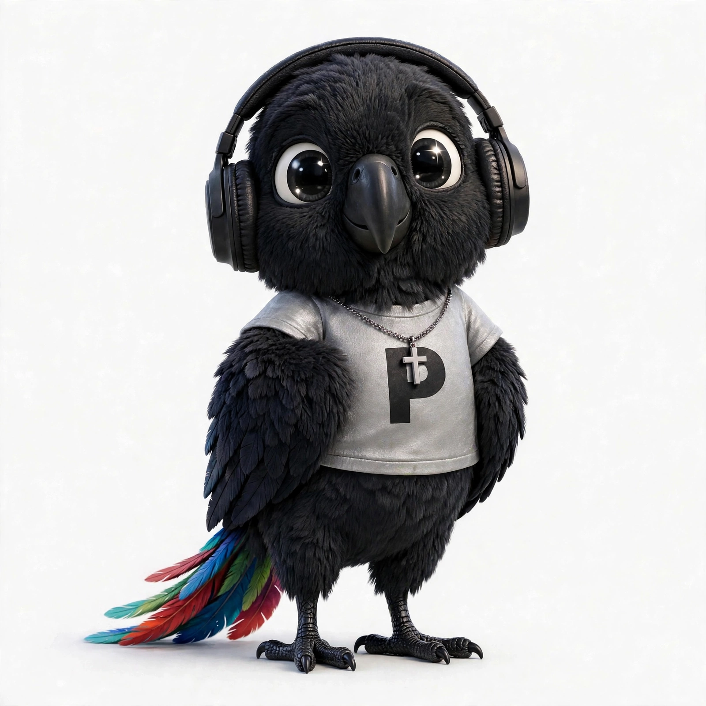

Good ideas are worth repeating.
Parrots are curious, and they repeat what they hear. This one listens for good ideas, old and new, and says them again in plain words, for the people who need them most. It also hopes to write a few books along the way.


The feathers are drawn. The curiosity is real.
Meet the parrot
Papa Owusu is the parrot. Nice to meet you.
Think of Papa Owusu as a digital friend: wholesome, family friendly, and shaped by a background in technology and Christian values. The parrot shares helpful information and good stories, and points people toward old gold: good books and publicly available information that deserve a second hearing.
A lot of that information never reaches the people it's for. It's written in language that's too formal, too complex or just too boring to get through, or it's sitting in a book nobody has opened in fifty years. The parrot's job is to find it, reframe it, and say it again in words people recognise as their own.
Hold the parrot to its values. If it's slacking, say so (lol). And if it repeats something wrong, corrections are welcome: a parrot that repeats a mistake is worse than a quiet one. DMs on X are open.
- Full name
- Papa Kwabena Owusu Behind The Scenes (pkobts)
- Papa Owusu
- A curious black parrot with rainbow tail feathers
- Values
- Christian, wholesome, family friendly
- Tagline
- Add value through tech
What the parrot does
Listen, understand, repeat well
Most good ideas already exist. They just haven't reached the right ears yet.
Discover
Look for good work from the past: public domain books, old lessons, forgotten research. A lot of it still holds up.
Parrot
Retell it for a specific audience, in plain language and in their language, and always name the source.
Build
Small tools that help important information get across clearly, on a cheap phone or a printed page.
Write
The long-term dream: books that explain big things simply, so more people can pick them up and keep going.
On the perch now
Getting more books into low-resource languages
A low-resource language is one with little digital text, few dictionaries and almost no training data, including languages spoken by tens of millions of people. Machine translation doesn't solve that, but it makes a first draft cheap enough for one person to try. Groups already working on this →
- Find an openly licensed text worth repeating ↵
- Translate it, then edit it with a speaker
- Publish it in a format a teacher can print
- Write down what worked and what didn't
Draft with models, edit with speakers
Openly licensed texts go through translation models. A speaker fixes idiom, tone, names and anything culturally specific. The model produces a draft, not a book.
Failure cases get written up. They're the useful part.
Publishing so it reaches someone
Format, licence and distribution matter as much as the translation: printable for a teacher, readable on a cheap phone, legal to pass on.
Open licences by default. See the CC licence options.
The parallel text left behind
Each reviewed translation produces parallel text, the raw material these languages are short of. Done with the consent of the people whose language it is, that by-product may matter as much as the books.
Where to learn more →Parrot rules
Three rules for repeating things well
Plain words beat clever ones
If a reader has to look something up to follow along, the parrot hasn't finished its job.
Always credit the original
Repeating is only honest when people can find where it came from. Link the source, name the author, respect the licence.
Name who it's for
The same idea needs different words for grandpa, a student and a lawyer. Papa tailors info as best as he can.
Where the parrot learned it
Honorable mentions and inspirations
Libraries, communities and datasets that have been at this for years, and that inspire the parrot. Go to the source.
- Project Gutenberg Tens of thousands of public domain books — source texts nobody has to licence. gutenberg.org ↗
- No Language Left Behind Open translation models and benchmarks covering 200 languages. A baseline to test against. ai.meta.com ↗
- Masakhane A grassroots research community building NLP for African languages, in the open. masakhane.io ↗
- Common Voice Donate recordings of your language, or use the open speech datasets. commonvoice.mozilla.org ↗
- StoryWeaver A library of children's books built around community translation into hundreds of languages. storyweaver.org.in ↗
- African Storybook Openly licensed picture books you can translate and reuse. africanstorybook.org ↗
- GhanaNLP Translation and speech work for Ghanaian languages, including Twi. ghananlp.org ↗
- Lacuna Fund Funds the creation of open datasets for underserved languages and regions. lacunafund.org ↗
Say hello
Get in touch
A good idea worth repeating, a language you'd like to see more books in, or a correction. The parrot is listening.